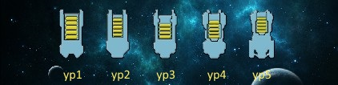
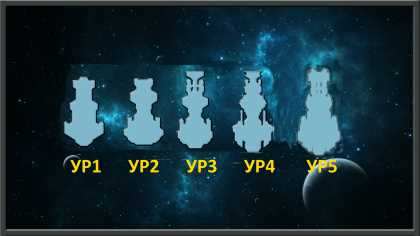

Корабли
Транспортный корабль
Транспортные корабли имеют решающее значение для торговли. Используются для доставки грузов между планетами и спутниками, а также для переноса артефактов из Красных и Белых Звезд. Транспорты являются основой ваших флотов. На уровне 3 транспорты получают возможность устанавливать модуль поддержки, который может быть использован, чтобы превратить корабль, который в противном случае непригоден для боя, в достойный корабль поддержки для линкоров. Однако основными установленными модулями являются торговые модули. В итоге более одного модуля поддержки на транспорт не установить. Скорость перемещения - 576AU/m
Добывающий корабль

Добывающие корабли (шахтерские) могут собирать водород с астероидных полей. Эти корабли медлительные. Для передвижения используется минимальное значение использования водорода, Установка добывающих модулей на шахтерские корабли значительно может повысить производство водорода. Без должного количества этих кораблей, водород будет в дефиците. Корабли могут добывать водород везде, где он есть – в своей системе, в системах, с кем установлены дипломатические отношения или в системах Красных или Белых Звезд. Начиная с 3 уровня корабля в них могут устанавливаться модули поддержки. Так же как и в случаи с транспортными кораблями на эти корабли более одного модуля поддержки не установить. Корабль имеет показатель количества секторов после сбора которых прекратит сбор водорода (эта информация показывается кратко как "осталось секторов". Если корабль переназначить, то счетчик возобновится. Чем больше уровень корабля тем больше секторов он обработает без вмешательства. Скорость перемещения - 432 AU/m
Линкор
Боевой корабль, который может быть оснащен вооружением, щитом или модулями поддержки. Линкоры, ориентированы на боевые действия. Поврежденные корпуса линкоров можно ремонтировать на колонизированных планетах, луне или на станции, на что требуется некоторое время. Вы не можете установить более одного щита и одного модуля вооружения. Линкоры имеют более высокие базовые показатели потребления водорода по сравнению с другими кораблями равного уровня, а также перемещаются быстрее. Они имеют больше модулей поддержки, чем любой другой корабль и являются самыми дорогими для строительства и модернизации. Боя между игроками нет за исключением действий на Белых Звездах. Т.е. линкоры не будут стрелять по кораблям другого игрока на Красных Звездах. Стрельба по цели осуществляется по принципу «что ближе в то и то и стреляю». Перевести огонь после начала ведения огня можно только тактически перемещая линкор. Скорость перемещения - 600AU/m